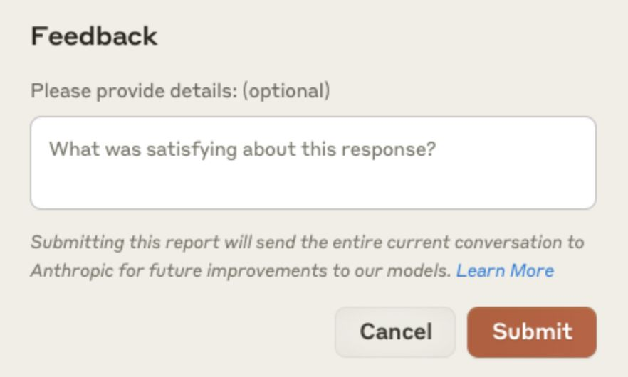
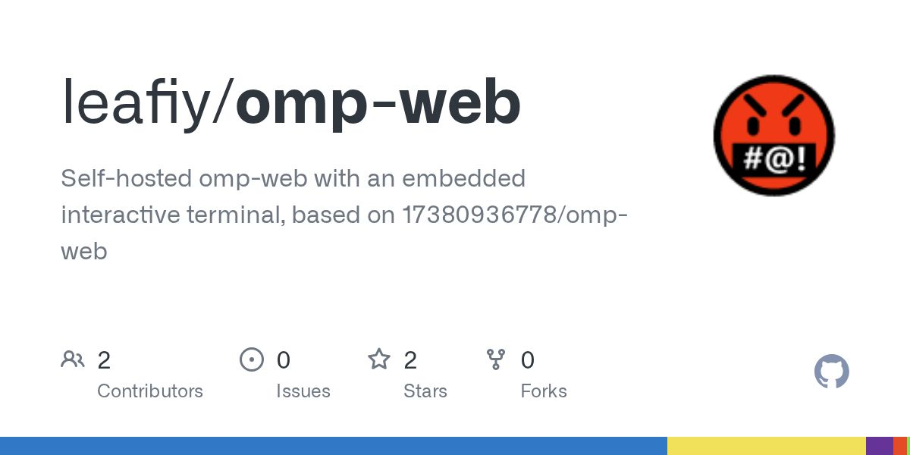

Claude 反馈数据最多保存 5 年。

原文正文要点
Reddit 帖子指出，在 Claude 中点赞、点踩或报告 bug 时，整段对话会被保存并可能用于训练。Anthropic 隐私中心说明针对商业产品（Claude for Work、API 等）：默认不用于训练，但主动反馈的对话最多保存 5 年、可能用于训练，团队管理员可关闭反馈按钮；个人版另有说明，「误导用户」是发帖人的观点。r/ClaudeAI（11-09 04:51）｜隐私中心原文
时间窗口：11-08 08:00 到 11-09 08:20（台北时间）。Claude Code、Codex、Cursor 与三家官方博客窗口内均无新内容，本期为短版，每条均核对正文与日期。

Reddit 帖子指出，在 Claude 中点赞、点踩或报告 bug 时，整段对话会被保存并可能用于训练。Anthropic 隐私中心说明针对商业产品（Claude for Work、API 等）：默认不用于训练，但主动反馈的对话最多保存 5 年、可能用于训练，团队管理员可关闭反馈按钮；个人版另有说明，「误导用户」是发帖人的观点。r/ClaudeAI（11-09 04:51）｜隐私中心原文
影响 claude.ai、Claude API、Claude Code 与 Claude Cowork，台北时间 11-08 16:18 至 16:32，已修复。r/ClaudeAI（11-08 16:29）
用 jq -r '.permissions.allow[]?' .claude/settings.local.json 列出已保存的命令；含密码、Token 或 Key 时，执行 git rm --cached 移出版本控制并加入 .gitignore；已推送的密钥需要更换，仅删除历史记录不够。r/ClaudeAI（11-08 21:01）

一位汉堡店店主自述不是开发者，用 Claude Code 搭建了涵盖任务、财务、库存、中央厨房配方、WhatsApp 营销与客服、人事考勤的系统，员工每天使用。他的经验是先让界面贴近原有纸质流程，再逐步调整。r/ClaudeAI（11-08 13:32）

作者是产品经理，为孩子做了口算小程序，并分享了九步流程：让 AI 反问理清需求、写文档、出原型、TDD 开发、单独会话做质量与安全测试，最后由真人伙伴验收。电鸭（11-08 15:45）
以下是本期项目及单日新增星数。
寻找开发过平面设计、包装设计、广告物料定制类 AI 设计系统的开发者，可提供现成系统或按需求定制报价；帖内未写预算。电鸭（11-08 13:54）
负责骑行赛事报名小程序、商城、微信支付退款与核销、运营后台，并集成 AI 赛事问答与完赛海报生成；技术栈为 Spring Boot、uni-app 与 Vue 3。薪资私聊，按月或按里程碑结算，申请需附一个端到端交付的项目。电鸭（11-08 14:39）
为 Kalshi、Polymarket 开发低延迟批量下单与撤单模块，试用任务固定价 ¥5,000–8,000，帖内列出明确的延迟验收标准；要求交易所或高频执行经验并附 GitHub。电鸭（11-09 06:32）
Claude Code、Codex 窗口内无新版本；Cursor Changelog 最新为 11-06；Anthropic、OpenAI、Google 官方窗口内无新稿；AI工具集与 AIbase 最新约为 11-06；V2EX 热议接口返回验证页；Hacker News 订阅源超时；r/vibecoding 返回空内容；量子位「资本正在撤离世界模型」订阅源只有导语，未读到正文，未收录；即刻页面未解析出帖子；Product Hunt 窗口内无新条目。